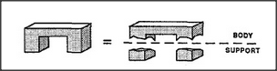
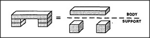
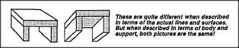

What is creativity? How do people get new ideas? Most thinkers would agree that some of the secret lies in finding new ways to look at things. We've just seen how to use the Body-Support concept to reformulate descriptions of some spatial forms, and soon we'll see some other ways to reformulate in terms of strength, containment, cause, and chain. But first let's look more carefully at how we made those four different arches seem the same, by making each of them seem to match a thing supported by two legs. In the case of Single-Arch, we did this by imagining some boundaries that weren't really there: this served to break a single object into three.
However, we dealt with Tower-Arch by doing quite the opposite: we treated some real boundaries as though they did not exist:
How cavalier a way to treat the world, to see three different things as one and to represent one thing as three! We're always changing boundaries! Where does an elbow start or end? When does a youth become an adult? Where does an ocean change into a sea? Why must our minds keep drawing lines to structure our reality? The answer is that unless we made those mind-constructed boundaries, we'd never see any thing at all! This is because we rarely see anything twice as exactly the same. Each time we're almost certain to be looking from a somewhat different view, perhaps from nearer or farther, higher or lower, in a different color or shade of light, or against a different background. For example, consider these two appearances of the same table.
Unless the mind could thus discard the aspects of each scene that are not essential to its present purposes, we could never learn anything. Otherwise, our recollections would rarely match appearances. Then nothing could make any sense — since nothing would seem permanent.